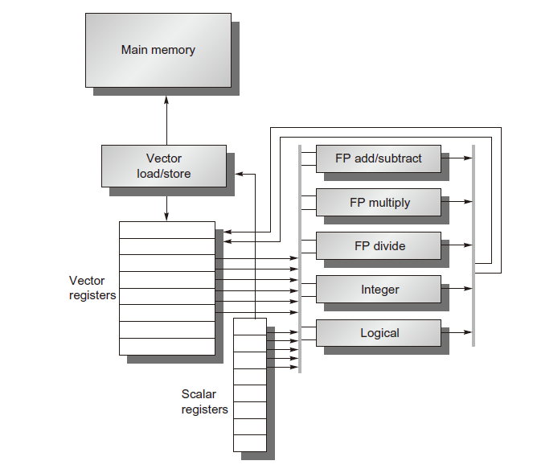

CA9 数据级并行性 (1)
引言
SIMD 体系结构利用了数据并行性
- 面向矩阵的科学计算
- 面向多媒体的图像和声音处理
- 机器学习算法
SIMD比MIMD更节能
- 与MIMD相比，SIMD单挑指令可以同时对许多数据进行操作
- 个人移动设备使SIMD更具吸引力
在SIMD架构中，程序员从代码顺序执行的角度来思考问题，获得代码并行执行的加速比。
## SIMD 并行性
SIMD 的三种变形
- 矢量体系结构
- SIMD 扩展指令集
- 图形处理单元GPUs
Intel x86
- 预计每年每个芯片处理器增加两个处理核
- SIMD 宽度每四年翻一倍
- SIMD 的潜在加速比是 MIMD 的两倍
矢量体系结构
- 将许多数据操作扩展为流水执行
- 对微处理器来说，代价昂贵
- 需要更多的晶体管资源
- 需要最够的DRAM带宽
SIMD 扩展指令集
- 1996年，MMX multimedia extensions
- SSE streaming SIMD extensions
- AVX advanced vector extensions
图形处理单元
- 与矢量体系结构共享特征，但具有自己的特性
- 独特的生态环境：系统处理器与系统内存+GPU 与图形内存
矢量体系结构
基本思路
- 将一组分散在内存中的元素读入矢量寄存器
- 对这些矢量寄存器进行操作
- 把操作结果放回内存中
对矢量数据执行一条指令，将获得对独立数据元素进行的多条寄存器-寄存器操作
大型寄存器文件作为编译器可控的缓存器
- 隐藏内存延迟：每次矢量加载或存储将导致一次内存延迟，而非每个元素一次，因此均摊了延迟时间
- 降低读写次数：利用内存带宽
矢量体系结构在提供良好的性能的同时，没有付出乱序超标量处理器在能耗和设计复杂性方面的代价。

RV64V 架构
32个64bit矢量寄存器
- 寄存器文件有16个读端口和8个写端口
矢量功能单元
- 全流水
- 检测数据和控制相关
矢量加载-存储单元
- 全流水
- 在初始延迟后每个时钟周期一个字
标量寄存器
- 31个通用寄存器
- 32个浮点寄存器
特色指令
跨步装载和存储
索引装载
索引存储
谓词：在计算机语言环境下，是指条件表达式的求值过程
数据类型和长度
多种数据大小
- 32个64bit元素 128个16bit元素，256个8bit元素
- 适合多媒体应用和科学计算
动态寄存器类型
创新点
- 数据类型与大小和每个矢量寄存器相关联，而不是指令相关联
- 指令执行之前，程序配置矢量寄存器用于特定的数据类型和宽度
动态寄存器类型将所有矢量内存分配给启用的矢量寄存器作为长矢量使用
- 最大矢量长度：每个矢量寄存器可以容纳的元素个数
若干概念
- 可矢量化
当循环程序相邻迭代之间不存在相关性时，可矢量化
- 链接
同时执行相关数据的矢量指令
一旦源矢量操作数的一个元素有效是，可以立即启动矢量操作
- 执行时间
是操作数矢量长度，结构危害和数据相关的函数
- 道：在矢量功能单元中配置的多个并行流水线
- 引发速率：矢量单元消耗操作数的速度
- 编队：可以同时开始执行的一组矢量指令
- 定时：执行一个指令编队所需要的时间
发出限制
启动时间
- 等待矢量功能单元满负荷运行的延迟时钟周期数
- 所有功能单元全流水
- 浮点数加法 6 cycle
- 浮点数乘法 7 cycle
- 浮点数除法 20 cycle
- 矢量加载 12 cycle
改进方法
- 每个时钟周期处理超过1个矢量元素
- 非64bit宽矢量
- 矢量代码中的取值令声明
- 优化存储系统来支持矢量处理器
- 多维矩阵和稀疏矩阵
- 编程矢量计算机
多通道概念
矢量长度寄存器
- 控制任何矢量操作长度，包括矢量装入和存储操作
- 不能大于最大矢量长度
谓词寄存器
存储体
没有足够的存储器带宽，矢量执行是徒劳的
装入指令启动时间